Park Map Details
Our Slide Tower is made up of 4 exciting slides. All slides have a 42" height requirement and all the slides end in our 3ft 6in splash pool. For all day adventures choose from:
Can you brave the wave? The constant simulated wave creates the perfect beach break every time! Height requirement 42” tall.
Enjoy tubing down the Rip Tide slide and landing into the river! Single tubes only. Height requirement 42” tall.
The El Rio Loco, or “Crazy River” goes ‘round and round’. Go with the flow while relaxing on a tube or enjoy floating through the current without one.
Our Competition Pool is a temperature controlled pool and is perfect for lap swimming, splashing, or even just floating on a mat. Practice your strokes during a swim lesson in our giant pool!
Splash, spray, laugh and play while utilizing the Wave's Spray Park perfect for kids under 48" tall.
 Our concessions shop, Surf Spot Grill, is open daily with great meals and treats! We are proud to serve delicious burgers, hot dogs, salads, shaved ice, ice cream, and more! Check out our concessions page for a complete menu listing.
Our concessions shop, Surf Spot Grill, is open daily with great meals and treats! We are proud to serve delicious burgers, hot dogs, salads, shaved ice, ice cream, and more! Check out our concessions page for a complete menu listing.
Our famous "Sugar Shack" cart is home to our delicious shaved ice and loads of treats!
 Male and female restrooms are located at the front of the park near the main entrance. Restrooms are complete with showering facilities and changing areas
Male and female restrooms are located at the front of the park near the main entrance. Restrooms are complete with showering facilities and changing areas
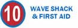Wave Shack is our merchandise and rental location. Check out single and double tubes, or rent a locker key! We also have fun novelty items for purchase along with sunscreen, towels, and goggles just in case you forgot your own! Wave Shack is also home to our First Aid location and lost & found.
The ticketbooth is the place to purchase your day admission tickets, or our helpful staff can answer any questions you may have. The main gate is your starting point for your Wave adventure, just show your ticket or season pass and you are on your way!
Visit our Wave Office and talk to our friendly staff about program registrations, season passes or any other questions you may have! We are here to help! If you need assistance over the phone just call us at at our contact number!
Our large grassy area is perfect for your group event or picnic and is also the home base for our weekly camps programs! Shaded trees surround the area and create a fun and relaxing environment!
- Salsa Twist - All open single or double tube slide
- Tubulation - All dark single tube slide
- Flash Flood - All open single tube slide
- Slam Dunk - All dark body slide
Can you brave the wave? The constant simulated wave creates the perfect beach break every time! Height requirement 42” tall.
Enjoy tubing down the Rip Tide slide and landing into the river! Single tubes only. Height requirement 42” tall.
The El Rio Loco, or “Crazy River” goes ‘round and round’. Go with the flow while relaxing on a tube or enjoy floating through the current without one.
Our Competition Pool is a temperature controlled pool and is perfect for lap swimming, splashing, or even just floating on a mat. Practice your strokes during a swim lesson in our giant pool!
Splash, spray, laugh and play while utilizing the Wave's Spray Park perfect for kids under 48" tall.
Our famous "Sugar Shack" cart is home to our delicious shaved ice and loads of treats!
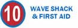Wave Shack is our merchandise and rental location. Check out single and double tubes, or rent a locker key! We also have fun novelty items for purchase along with sunscreen, towels, and goggles just in case you forgot your own! Wave Shack is also home to our First Aid location and lost & found.
The ticketbooth is the place to purchase your day admission tickets, or our helpful staff can answer any questions you may have. The main gate is your starting point for your Wave adventure, just show your ticket or season pass and you are on your way!
Visit our Wave Office and talk to our friendly staff about program registrations, season passes or any other questions you may have! We are here to help! If you need assistance over the phone just call us at at our contact number!
Our large grassy area is perfect for your group event or picnic and is also the home base for our weekly camps programs! Shaded trees surround the area and create a fun and relaxing environment!
Park Rules
| 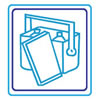 | Please do not enter the park with coolers, food, beverages, radios, external music, pets, or glass. | Ride restrictions do apply. Please read all signs and listen to all lifeguard instructions before riding. Persons not following ride rules are subject to removal from the park. | |
| 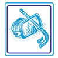 | Personal floatation devices, toys, masks, snorkels, flippers and mermaid fins will not be allowed in the attractions or pools. | 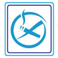 | Smoking (including e-cigs) is not permitted inside the park. |
| 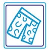 | Appropriate swimwear is required & determined by management. No pants, visible undergarments, transparent attire, denim or suits are allowed. | Parents / Guardians are responsible for their children who choose to exit the park unattended. | |
| 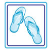 | Some attractions may require riders to be free of rivets, lifevests, footwear and eyewear. | 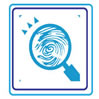 | The Wave is not responsible for lost, stolen, or damaged articles. Lost and found is located at The Wave Shack. Please designate a group meeting spot as we are unable to page guests. |
| 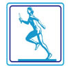 | Please no running or horseplaying. Aggressive or abusive behavior and profanity are not permitted. | All rides and attractions close fifteen minutes before park closing. | |
| 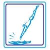 | Please no diving. Underwater breath holding activities are not permitted. | 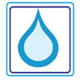 | Please do not drink the pool water. Please shower before entering the pool. |
| 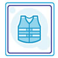 | Lifevests are provided and we recommend weak or non-swimmers wear a lifevest at all times. | 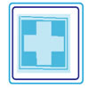 | Lifeguard testing / training is an ongoing part of our safety program. Use of submersible mannequins and live active guests may occur during your visit. |
| Diaper aged children must wear a waterproof swim diaper in order to participate in attractions. Please do not change diapers on the pool deck. | Cameras are not allowed on any attraction or in use in the restrooms. Please keep photos / videos to within your own party. | ||
| 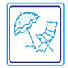 | Chairs and shade are available on a first come, first serve basis. | Tickets are non-transferable and non-refundable. Hours and attraction availability are subject to change without notice. General admission tickets are not valid for special events. | |
| 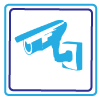 | Security cameras are in use. By entering the facility, each guest grants The Wave the right to videotape or photograph him/her on park property without payment or consideration. | Ticket or Season Pass is required for admission. Handstamp must accompany ticket or pass for re-entry. Re-admission is not guaranteed based on park capacity numbers. |